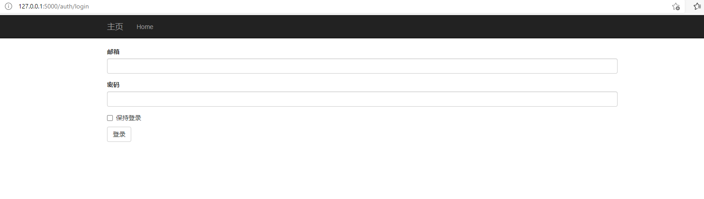
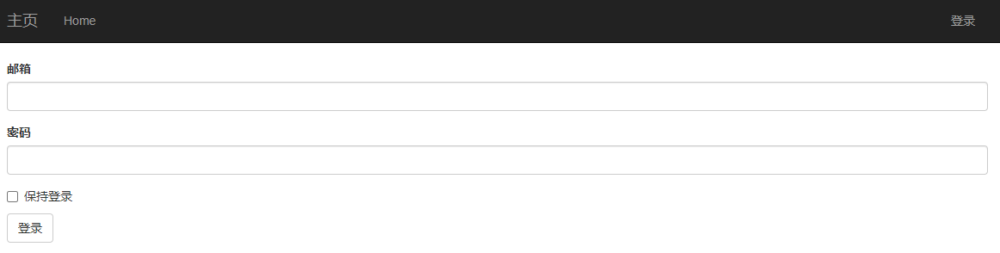
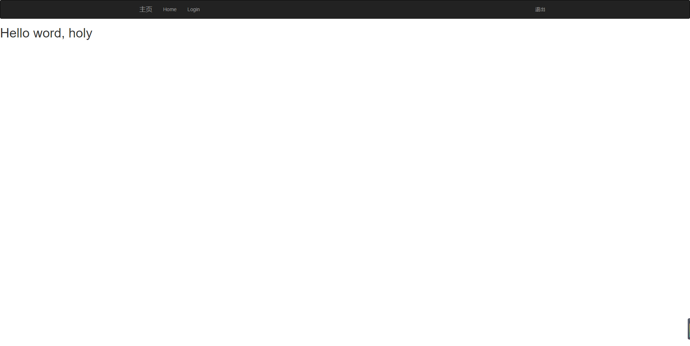
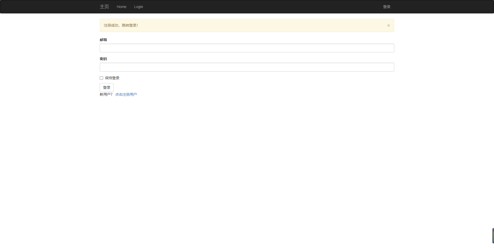

本文最后更新于：2021年8月9日 晚上
密码安全性 设计Web应用时，人们往往会忽视数据库中用户信息的安全性。如果攻击者入侵服务器，攫取了数据库，用户的安全就处在风险之中，而且这个风险超乎你的想象。众所周知，多数用户会在不同的网站中使用相同的密码。因此，即便不保存任何敏感信息，攻击者获得存储在数据库中的密码之后，也能访问用户在其他网站中的账户。
若想保证数据库中用户密码的安全，关键在于不存储密码本身，而是存储密码的散列值 。计算密码散列值的函数接收密码作为输入，添加随机内容（盐值） 之后，使用多种单向加密算法转换密码，最终得到一个和原始密码没有关系的字符序列，而且无法还原成原始密码。核对密码时，密码散列值可代替原始密码，因为计算散列值的函数是可复现的：只要输入（密码和盐值）一样，结果就一样。
使用Werkzeug计算密码散列值 Werkzeug中的security模块实现了密码散列值的计算。这一功能的实现只需要两个函数，分别用在注册和核对两个阶段。
1 generate_password_hash(password, method='pbkdf2:sha256' , salt_length=8 )
这个函数的输入为原始密码，返回密码散列值的字符串形式，供存入用户数据库。method和salt_length的默认值就能满足大多数需求。
1 check_password_hash(hash , password)
这个函数的参数是从数据库中取回的密码散列值和用户输入的密码。返回值为True时表明用户输入的密码正确。
在创建的User模型的基础上添加密码散列所需的改动，在User模型中加入密码散列。
1 2 3 4 5 6 7 8 9 10 11 12 13 14 class User (db.Model ):128 )) @property def password (self ):raise AttributeError('密码不可读' ) @password.setter def password (self, password ):def verify_password (self, password ):return check_password_hash(self.password_hash, password)
计算密码散列值的函数通过名为password的只写属性实现。设定这个属性的值时，赋值方法会调用Werkzeug提供的generate_password_hash()函数，并把得到的结果写入password_hash字段。如果试图读取password属性的值，则会返回错误，原因很明显，因为生成散列值后就无法还原成原来的密码了。
verify_password()方法接受一个参数（即密码），将其传给Werkzeug提供的check_password_hash()函数，与存储在User模型中的密码散列值进行比对。如果这个方法返回True，表明密码是正确的。
密码散列功能已经完成，下面在shell中测试一下：
1 2 3 4 5 6 7 8 9 10 11 12 13 14 15 16 17 18 19 (venv) $ flask shell>>> u = User()>>> u.password = 'cat' >>> u.password"<console>" , line 1 , in <module>"D:\PycharmProjects\Flask_Projects\flasky\app\models.py" , line 17 , in passwordraise AttributeError('密码不可读' )>>> u.password_hash'pbkdf2:sha256:260000$ylvTADdsUn6mFJv8$824d40ef026f79bf2413ee16b7a9ecacfdac124428ae285574a56136f0bbde60' >>> u.verify_password('cat' )True >>> u.verify_password('dog' )False >>> u2 = User()>>> u2.password='cat' >>> u2.password_hash'pbkdf2:sha256:260000$e3x8WYKw4KVueaUS$e93b63b9cbfb0e719a9b177970cc3815470d2bcbd59079236ef5873a753cc007'
注意，尝试访问password属性会返回AttributeError。另外，即使用户u和u2使用了相同的密码，它们的密码散列值也完全不一样。为了确保这个功能今后依然能使用，我们可以把上述手动测试的过程写成单元测试，以便重复执行。在tests包中新建一个模块，编写3个新测试，测试最近对User模型所做的改动。
tests/test user model.py：密码散列测试
1 2 3 4 5 6 7 8 9 10 11 12 13 14 15 16 17 18 19 20 21 22 23 24 import unittestfrom app.models import Userclass UserModelTestCase (unittest.TestCase ):def test_password_setter (self ):'cat' )is not None )def test_no_password_getter (self ):'cat' )with self.assertRaises(AttributeError):def test_password_verification (self ):'cat' )'cat' ))'dog' ))def test_password_salts_are_random (self ):'cat' )'cat' )
1 2 3 4 5 6 7 8 9 10 11 12 13 test_app_exists (test_basics.BasicsTestCase) ... <class 'config .TestConfig '>ok test_app_is_testing (test_basics.BasicsTestCase ) ... <class 'config .TestConfig '>ok test_no_password_getter (test_user_model.UserModelTestCase ) ... ok test_password_salts_are_random (test_user_model.UserModelTestCase ) ... ok test_password_setter (test_user_model.UserModelTestCase ) ... ok test_password_verification (test_user_model.UserModelTestCase ) ... ok ---------------------------------------------------------------------- Ran 6 tests in 1.092s OK
每次想确认一切功能是否正常时，就可以运行单元测试组件。通过自动化测试验证功能不费吹灰之力，因此应该经常运行，确保以后的改动不会破坏现在可用的功能。
创建身份认证蓝本 我们在第7章介绍过蓝本，把创建应用的过程移入工厂函数后，可使用蓝本在全局作用域中定义路由。本节将在一个新蓝本中定义与用户身份验证子系统相关的路由，这个蓝本名为auth。把应用的不同子系统放在不同的蓝本中，有利于保持代码整洁有序。
auth蓝本保存在同名Python包中。这个蓝本的包构造函数创建蓝本对象，再从views.py模块中导入路由。
app/auth/__init__.py：创建身份验证蓝本
1 2 3 4 5 from flask import Blueprint'auth' , __name__)from . import views
app/auth/views.py模块导入蓝本，然后使用蓝本的route装饰器定义与身份验证相关的路由。这段代码添加了一个/login路由，渲染同名占位模板。
app/auth/views.py：身份验证蓝本中的路由和视图函数。
1 2 3 4 5 6 7 from flask import render_templatefrom . import auth@auth.route('/login' def login ():return render_template('auth/login.html' )
注意，为render_template()指定的模板文件保存在auth目录中。这个目录必须在app/templates中创建，因为Flask期望模板的路径是相对于应用的模板目录而言的。把蓝本中用到的模板放在单独的子目录中，能避免与main蓝本或以后添加的蓝本发生冲突。
也可以配置蓝本使用专门的目录保存模板。如果配置了多个模板目录，那么render_template()函数会先搜索应用的模板目录，然后再搜索蓝本的模板目录。
auth蓝本要在create_app()工厂函数中附加到应用上。
app/__init__.py：注册身份验证蓝本:
1 2 3 4 5 6 7 8 9 def create_app (config_name ):from .auth import auth as auth_blueprint'/auth' )return app
注册蓝本时使用的url_prefix是可选参数。如果使用了这个参数，注册后蓝本中定义的所有路由都会加上指定的前缀，即这个例子中的/auth。例如，/login路由会注册成/auth/login，在开发Web服务器中，完整的URL就变成了http://localhost:5000/auth/login。
使用Flask-Login验证用户身份 安装扩展：
1 (venv) $ pip install flask-login
准备用于登录的用户模型 Flask-Login的运转需要应用中有User对象。要想使用Flask-Login扩展，应用的User模型必须实现几个属性和方法：
属性/方法
说明
is_authenticated
如果用户提供的登录凭据有效，必须返回True，否则返回False
is_active
如果允许用户登录，必须返回True，否则返回False。如果想禁用账户，可以返回False
is_anonymous
对普通用户必须返回False，如果是表示匿名用户的特殊用户对象，应该返回True
get_id()
必须返回用户的唯一标识符，使用Unicode编码字符串
这些属性和方法可以直接在模型类中实现，不过还有一种更简单的替代方案。Flask-Login提供了一个UserMixin类，其中包含默认实现，能满足多数需求。
1 2 3 4 5 6 7 8 9 10 from flask_login import UserMixinclass User (UserMixin, db.Model ):'users' id = db.Column(db.Integer, primary_key=True )True )64 ), unique=True , index=True )'roles.id' ))128 ))
注意，这个示例中还添加了email字段。在这个应用中，用户使用电子邮件地址登录，因为相对于用户名而言，用户更不容易忘记自己的电子邮件地址。
Flask-Login在应用的工厂函数中初始化：
1 2 3 4 5 6 7 8 9 10 from flask_login import LoginManager'auth.login' def create_app (config_name ):
LoginManager对象的login_view属性用于设置登录页面的端点。匿名用户尝试访问受保护的页面时，Flask-Login将重定向到登录页面。因为登录路由在蓝本中定义，所以要在前面加上蓝本的名称。
最后，Flask-Login要求应用指定一个函数，在扩展需要从数据库中获取指定标识符对应的用户时调用。
1 2 3 4 5 from . import login_manager@login_manager.user_loader def load_user (user_id ):return User.query.get(int (user_id))
login_manager.user_loader装饰器把这个函数注册给Flask-Login，在这个扩展需要获取已登录用户的信息时调用。传入的用户标识符是个字符串，因此这个函数先把标识符转换成整数，然后传给Flask-SQLAlchemy查询，加载用户。正常情况下，这个函数的返回值必须是用户对象；如果用户标识符无效，或者出现了其他错误，则返回None。
保护路由 为了保护路由，只让通过身份验证的用户访问，Flask-Login提供了一个loginrequired装饰器。其用法演示如下
1 2 3 4 5 6 from flask_login import login_required@app.route('/secert' @login_required def secert ():return 'Only authenticated users are allowed!'
多个函数装饰器可以叠加使用。函数上有多个装饰器时，各装饰器只对随后的装饰器和目标函数起作用。在这个示例中，secret()函数受login_required装饰器的保护，禁止未授权的用户访问，得到的函数又注册为一个Flask路由。如果调换两个装饰器，得到的结果将是错的，因为原始函数先注册为路由，然后才从login_required装饰器接收到额外的属性。
得益于login_required装饰器，如果未通过身份验证的用户访问这个路由，Flask-Login将拦截请求，把用户发往登录页面。
添加登录表单 呈现给用户的登录表单中包含一个用于输入电子邮件地址的文本字段、一个密码字段、一个“记住我”复选框和一个提交按钮。
app/auth/forms.py：登录表单
1 2 3 4 5 6 7 8 9 10 from flask_wtf import FlaskFormfrom wtforms import StringField, PasswordField, BooleanField, SubmitFieldfrom wtforms.validators import DataRequired, Length, Emailclass LoginForm (FlaskForm ):'邮箱' , validators=[DataRequired(), Length(1 , 64 ), Email()])'密码' , validators=[DataRequired()])'保持登录' )'登录' )
PasswordField类表示属性为type="password"的<input>元素。BooleanField类表示复选框。电子邮件字段用到了WTForms提供的Length()、Email()和DataRequired()这3个验证函数，不仅确保这个字段有值，而且必须是有效的。提供验证函数列表时，WTForms将按照指定的顺序执行各个验证函数。倘若验证失败，显示的错误消息将是首个失败的验证函数的消息。

登录页面使用的模板保存在auth/login.html文件中。这个模板只需使用Flask-Bootstrap提供的wtf.quick_form()宏渲染表单即可。
base.html模板中的导航栏可以使用Jinja2条件语句判断当前用户的登录状态，分别显示登录或退出链接。
1 2 3 4 5 6 7 <ul class ="nav navbar-nav navbar-right" > <li > <a href ="{{ url_for('auth.logout') }}" > 退出</a > </li > <li > <a href ="{{ url_for('auth.login') }}" > 登录</a > </li > </ul >
判断条件中的变量current_user由Flask-Login定义，在视图函数和模板中自动可用。这个变量的值是当前登录的用户，如果用户未登录，则是一个匿名用户代理对象。匿名用户对象的is_authenticated属性值是False，所以通过current_user.is_authenticated表达式就能判断当前用户是否登录。

登入用户 视图函数login()的实现。
1 2 3 4 5 6 7 8 9 10 11 12 13 @auth.route('/login' , methods=['GET' , 'POST' ] def login ():if login_form.validate_on_submit():if user is not None and user.verify_password(login_form.password.data):next = request.args.get('next' )if next is None or not next .startswith('/' ):next = url_for('main.index' )return redirect(next )'无效的用户名或密码' )return render_template('/auth/login.html' , login_form=login_form)
这个视图函数创建了一个LoginForm对象，用法和第4章中的那个简单表单一样。当请求类型是GET时，视图函数直接渲染模板，即显示表单。当表单通过POST请求提交时，Flask-WTF的validate_on_submit()函数会验证表单数据，然后尝试登入用户。
为了登入用户，视图函数首先使用表单中填写的电子邮件地址从数据库中加载用户。如果电子邮件地址对应的用户存在，再调用用户对象的verify_password()方法，其参数是表单中填写的密码。如果密码正确，调用Flask-Login的login_user()函数，在用户会话中把用户标记为已登录。login_user()函数的参数是要登录的用户，以及可选的“记住我”布尔值，“记住我”也在表单中勾选。如果这个字段的值为False，关闭浏览器后用户会话就过期了，所以下次用户访问时要重新登录。如果值为True，那么会在用户浏览器中写入一个长期有效的cookie，使用这个cookie可以复现用户会话。cookie默认记住一年，可以使用可选的REMEMBERCOOKIE_DURATION配置选项更改这个值。
如果用户输入的电子邮件地址或密码不正确，应用会设定一个闪现消息，并再次渲染表单，让用户再次尝试登录。
退出用户 app/auth/views.py：退出路由
1 2 3 4 5 6 7 8 from flask_login import login_required, logout_user@auth.route('/logout' @login_required def logout ():'您已退出！' )return redirect(url_for('main.index' ))
为了登出用户，这个视图函数调用Flask-Login的logout_user()函数，删除并重设用户会话。随后会显示一个闪现消息，确认这次操作，然后重定向到首页，这样就成功退出了。
登录测试 为验证登录功能可用，可以更新首页，使用已登录用户的名字显示一个欢迎消息。
app/templates/index.html：为已登录的用户显示一个欢迎消息。
1 2 3 4 5 6 7 8 9 {% block content %}if current_user.is_authenticated %}else %}
这个模板再次使用current_user.username判断用户是否已经登录。
因为还未实现用户注册功能，所以目前只能在shell中注册新用户：
1 2 3 4 (venv) $ flask shell>>> u = User(email='espholychan@outlook.com' ,username='holy' ,password='123' )>>> db.session.add(u)>>> db.session.commit()
刚刚创建的用户现在可以登录了。用户登录后显示的首页如图所示。

注册新用户 如果新用户想成为应用的成员，必须在应用中注册，这样应用才能识别并登入用户。应用的登录页面中要显示一个链接，把用户带到注册页面，让用户输入电子邮件地址、用户名和密码。
添加用户注册表单 注册页面中的表单要求用户输入电子邮件地址、用户名和密码。
app/auth/forms.py：用户注册表单
1 2 3 4 5 6 7 8 9 10 11 12 13 14 15 16 17 18 19 20 21 22 23 24 25 26 27 28 from flask_wtf import FlaskFormfrom wtforms import StringField, PasswordField, BooleanField, SubmitField, ValidationErrorfrom wtforms.validators import DataRequired, Length, Email, Regexp, EqualTofrom ..models import Userclass LoginForm (FlaskForm ):'邮箱' , validators=[DataRequired(), Length(1 , 64 ), Email()])'密码' , validators=[DataRequired()])'保持登录' )'登录' )class RegistrationForm (FlaskForm ):'邮箱' , validators=[DataRequired(), Length(1 , 64 ), Email()])'用户名' , validators=[DataRequired(), Length(1 , 64 ),'[A-Za-z][A-Za-z0-9.]*$' , 0 , '用户名必须含有字母数字或下划线' )])'密码' , validators=[DataRequired(), EqualTo('password2' , message='密码必须一致' )])'确认密码' , validators=[DataRequired()])'注册' )def validate_email (self, field ):if User.query.filter_by(email=field.data).first():raise ValidationError('邮箱已经被注册。' )def validate_user (self, field ):if User.query.filter_by(username=field.data).first():raise ValidationError("用户已存在。" )
这个表单使用WTForms提供的Regexp验证函数，确保username字段的值以字母开头，而且只包含字母、数字、下划线和点号。这个验证函数中正则表达式后面的两个参数分别是正则表达式的标志和验证失败时显示的错误消息。
为了安全起见，密码要输入两次。此时要验证两个密码字段中的值是否一致，这种验证可使用WTForms提供的另一验证函数实现，即EqualTo。这个验证函数要附属到两个密码字段中的一个上，另一个字段则作为参数传入。
这个表单还有两个自定义的验证函数，以方法的形式实现。如果表单类中定义了以validate开头且后面跟着字段名的方法，这个方法就和常规的验证函数一起调用。本例分别为email和username字段定义了验证函数，确保填写的值在数据库中没出现过。自定义的验证函数要想表示验证失败，可以抛出ValidationError异常，其参数就是错误消息。显示这个表单的模板是/templates/auth/register.html。与登录模板一样，这个模板也使用wtf.quick form()渲染表单。
1 2 3 4 5 6 7 8 9 10 11 12 13 14 15 16 17 18 19 {% extends 'base.html' %}import 'bootstrap/wtf.html' as wtf %}class ="container "> {% for message in get_flashed_messages () %} <div class ="alert alert -warning "> <button type ="button " class ="close ">× ;</button > {{ message }} </div > {% endfor %} <div class ="col "> {{ wtf .quick_form (login_form ) }} </div > </div > {% endblock %}
登录页面要显示一个指向注册页面的链接，让没有账户的用户能轻松找到注册页面。
app/templates/auth/login.html：链接到注册页面
1 2 3 4 <p > <a href ="{{ url_for('auth.register') }}" > 点击注册用户</a > </p >
注册新用户 处理用户注册的过程没有什么难以理解的地方。提交注册表单，通过验证后，系统使用用户填写的信息在数据库中添加一个新用户。
app/auth/views.py：用户注册路由。
1 2 3 4 5 6 7 8 9 10 11 12 @auth.route('/register' , methods=['GET' , 'POST' ] def register ():if register_form.validate_on_submit():"注册成功，跳转登录！" )return redirect(url_for('auth.login' ))return render_template('/auth/register.html' , register_form=register_form)
